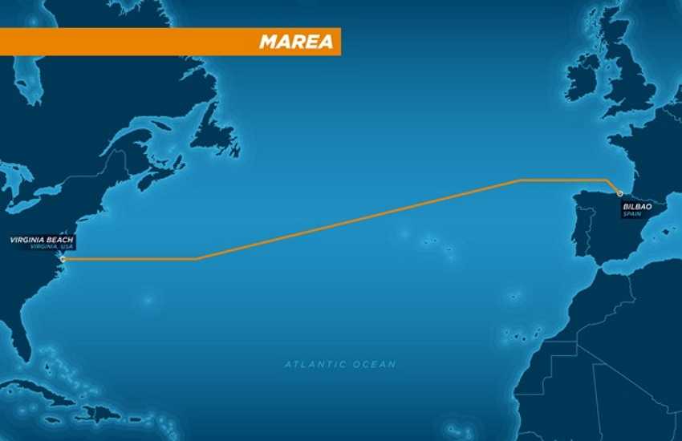
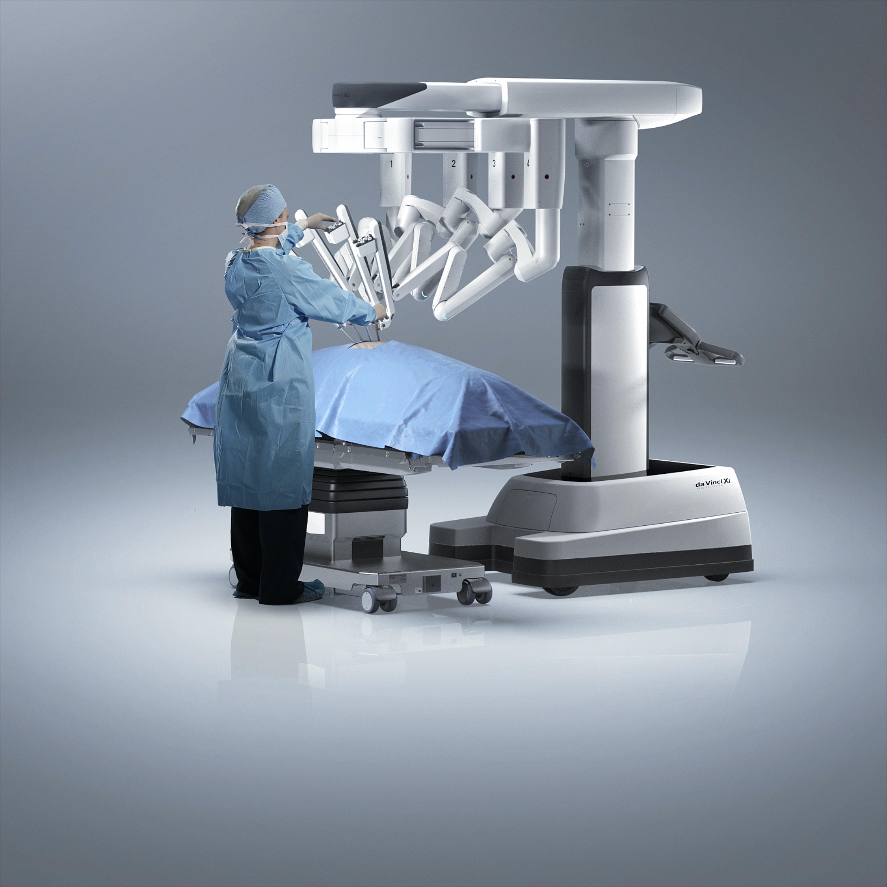

The MAREA Undersea Cable
The MAREA undersea cable represents one of the most ambitious fiber optic projects in recent history. Spanning approximately 6,600 kilometers across the Atlantic Ocean, it connects Virginia Beach in the United States with Bilbao in Spain.
Project Background
In 2016, Microsoft and Facebook announced their collaboration on this groundbreaking project. The name "MAREA" means "tide" in Spanish, reflecting the transatlantic nature of this massive infrastructure investment. The cable was designed to address the growing demand for high-speed, reliable connections between Europe and the Americas.
Key Technical Specifications
- Length: 6,600 kilometers (4,100 miles)
- Capacity: 160 terabits per second
- 8 fiber pairs
- Open design allowing for technology upgrades as equipment advances
Technical Innovations
What makes MAREA particularly remarkable is not just its length but its unprecedented capacity. With the ability to transmit up to 160 terabits per second, it was the highest-capacity subsea cable to cross the Atlantic at the time of its completion in 2017. This capacity is equivalent to streaming approximately 71 million HD videos simultaneously.
MAREA utilizes an open design with interoperable technology, allowing it to evolve with advances in optical technology. This future-proofing ensures that its capacity can be increased over time without replacing the entire cable.
Installation Challenges
Installing a cable of this magnitude presented numerous challenges:
- The cable needed to be laid on the ocean floor at depths of up to 11,000 feet
- Engineers had to account for underwater currents, marine life, and varying seabed conditions
- The cable required specialized armor in shallow waters to protect against fishing activities and ship anchors
- The project involved coordination across multiple international jurisdictions
Impact and Significance
The MAREA cable has had significant impacts on global connectivity:
- Increased redundancy in transatlantic communications infrastructure
- Reduced latency for data transfers between Europe and the Americas
- Enhanced capacity to handle growing cloud computing and streaming services
- Improved resilience against natural disasters by taking a more southern route than other transatlantic cables
This project demonstrates how fiber optic technology continues to enable global connectivity at unprecedented scales, supporting the ever-increasing demands of our digital world.
Fiber Sensors in the Burj Khalifa
Standing at 828 meters (2,717 feet), the Burj Khalifa in Dubai is currently the world's tallest building. What many people don't realize is that the structural health of this architectural marvel is monitored by an extensive network of fiber optic sensors.
Implementation Overview
During the construction of the Burj Khalifa, engineers integrated a sophisticated structural health monitoring system based on fiber optic technology. This system was designed to monitor the building's response to wind, temperature changes, and building load throughout its lifetime.
Key Features of the Monitoring System
- Over 1,000 fiber optic sensors embedded throughout the structure
- Continuous real-time monitoring of structural parameters
- Data collection for both short-term and long-term analysis
- Integration with the building's overall management systems
Types of Fiber Optic Sensors Used
The Burj Khalifa utilizes several types of fiber optic sensing technologies:
- Fiber Bragg Grating (FBG) Sensors: These sensors measure strain and temperature with high precision. They work by reflecting specific wavelengths of light while transmitting all others.
- Distributed Temperature Sensing (DTS): These systems measure temperature along the entire length of a fiber optic cable, providing a continuous temperature profile.
- Distributed Acoustic Sensing (DAS): These sensors detect acoustic energy changes, allowing for monitoring of vibrations throughout the structure.
Benefits and Applications
The fiber optic monitoring system provides numerous benefits for the building's maintenance and safety:
- Early detection of potential structural issues before they become problematic
- Validation of design assumptions during and after construction
- Improved understanding of how the building responds to environmental factors
- Enhanced safety through continuous structural health assessment
- Optimization of maintenance schedules based on actual structural performance
Technical Advantages of Fiber Optics for Structural Monitoring
Fiber optic sensors offer distinct advantages over traditional electrical sensors in this application:
- Immunity to electromagnetic interference
- No risk of electrical sparks in sensitive areas
- Ability to transmit signals over long distances without amplification
- Resistance to harsh environmental conditions
- Capability to multiplex multiple sensors on a single fiber
- Small size allowing for non-intrusive installation
The implementation of fiber optic sensing technology in the Burj Khalifa represents a significant advancement in the field of structural health monitoring and demonstrates how fiber optics continues to find new applications beyond communications.

Fiber Optics in Robotic Surgery
The da Vinci Surgical System has revolutionized minimally invasive surgery, allowing surgeons to perform complex procedures with enhanced precision and control. At the heart of this remarkable technology are advanced fiber optic systems that enable high-definition visualization and precise instrument control.
System Overview
The da Vinci Surgical System consists of three primary components:
- A surgeon console where the physician controls the procedure
- A patient-side cart with robotic arms that hold surgical instruments
- A high-definition 3D vision system providing detailed views of the surgical field
Key Fiber Optic Applications in the da Vinci System
- High-definition 3D visualization system
- Illumination of the surgical field
- Signal transmission between system components
- Sensing for precise instrument positioning
3D Visualization System
The visualization system of the da Vinci utilizes advanced fiber optics in several ways:
- A stereoscopic endoscope contains two high-definition cameras, each with its own optical path
- Fiber optic bundles transmit bright, clear illumination to the surgical site
- The system provides up to 10x magnification, allowing surgeons to see details not visible to the naked eye
- The 3D image processing creates depth perception that is crucial for precise surgical movements
Instrument Control and Sensing
Fiber optic technology also plays a crucial role in the precise control of surgical instruments:
- Fiber optic sensors provide real-time feedback on instrument position and orientation
- The system filters out natural hand tremors, translating the surgeon's hand movements into precise instrument movements
- Fiber optic data pathways ensure minimal latency between the surgeon's actions and instrument response
- Some newer versions utilize fiber optic shape sensors based on Fiber Bragg Grating technology to track the exact position of instruments within the patient's body
Clinical Benefits
The integration of fiber optic systems in robotic surgery has led to numerous patient benefits:
- Smaller incisions resulting in less scarring and faster recovery
- Reduced blood loss during procedures
- Lower risk of surgical site infections
- Enhanced precision for delicate procedures like prostatectomies and cardiac surgeries
- Improved ergonomics for surgeons, reducing fatigue during long procedures
Future Developments
Ongoing advancements in fiber optic technology continue to enhance robotic surgical systems:
- Integration of fluorescence imaging capabilities to highlight specific tissues
- Development of thinner, more flexible fiber optic bundles for access to tighter anatomical spaces
- Improved haptic feedback systems using fiber optic pressure sensors
- Enhanced image resolution through new fiber optic designs
The da Vinci Surgical System exemplifies how fiber optic technology extends far beyond telecommunications, revolutionizing fields like medicine and improving patient outcomes worldwide.